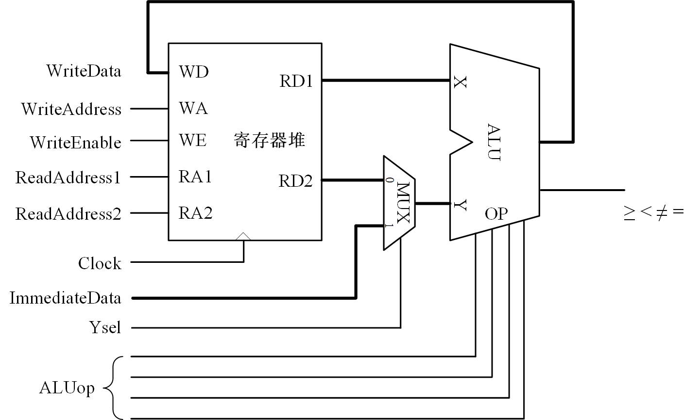

单周期数据通路实验
本实验是选做实验。
实验内容和要求
“周期”是指时钟周期，如果完成一次运算只需要一个时钟周期，就称为单周期数据通路；需要几个时钟周期才能完成一次运算则称为多周期数据通路。单周期数据通路很容易演变为流水线数据通路，多为RISC处理器采用。本项目设计的单周期数据通路将应用于RISC-V CPU。
参考设计
实验材料给出了图 1单周期数据通路的代码。该数据通路使用了前面实验中的三端口寄存器堆，2个读端口向ALU的两个输入端提供运算数据，1个写端口接收ALU的运算结果，可以一个周期完成读数据、运算、存结果；ALU使用前面算术逻辑单元实验的参考设计。
前面实验中ALU和寄存器堆都是直接写在VirtualBoard模块中的，本实验将它们写成独立的模块，并且字长采用参数定义，以便在后面的CPU设计中重复使用。
图 1. 参考设计：单周期数据通路
参考设计代码使用了SystemVerilog的package、结构体、枚举等描述方法，是本项目要掌握的内容之一。
设计任务

图 2. 设计任务：单周期数据通路
用前面实验中自己设计的ALU和三端口寄存器堆封装成模块，替换参考设计的相应模块。ALU模块的端口定义如下。
module ALU #(parameter N=4) ( input logic [N-1:0] iX, iY, input logic [3:0] iALUop, output logic [N-1:0]oF, output defs::t_cmp oCmp );
三端口寄存器堆模块的端口定义如下。
module RegFile #(parameter N=4) ( input logic Clk, input logic iWE, input logic [1:0] iWA, iRA1, iRA2, input logic [N-1:0] iWD, output logic [N-1:0] oRD1, oRD2 );
完成以下验证操作。
1）将2个数据存入R1、R2寄存器
数据通过Data开关设置。从数据通路图可以看出，Data并没有直接连在寄存器堆的写端口，而是经过多路器后送到了ALU的Y输入端；为了将Data送到寄存器堆的写端口，必须经过ALU。在前面寄存器堆的实验中已经设计R0寄存器的值恒为0，可以用ALU将Data加上R0寄存器值，将Data传送到寄存器堆的写端口。
2）完成ALU运算
运算数是R1、R2或者R1、Data。